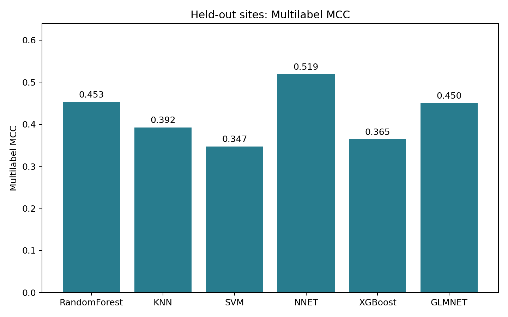
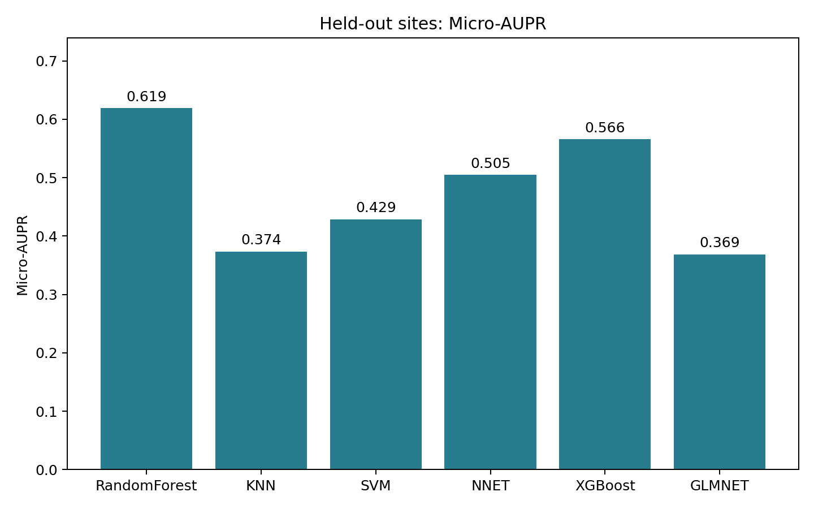
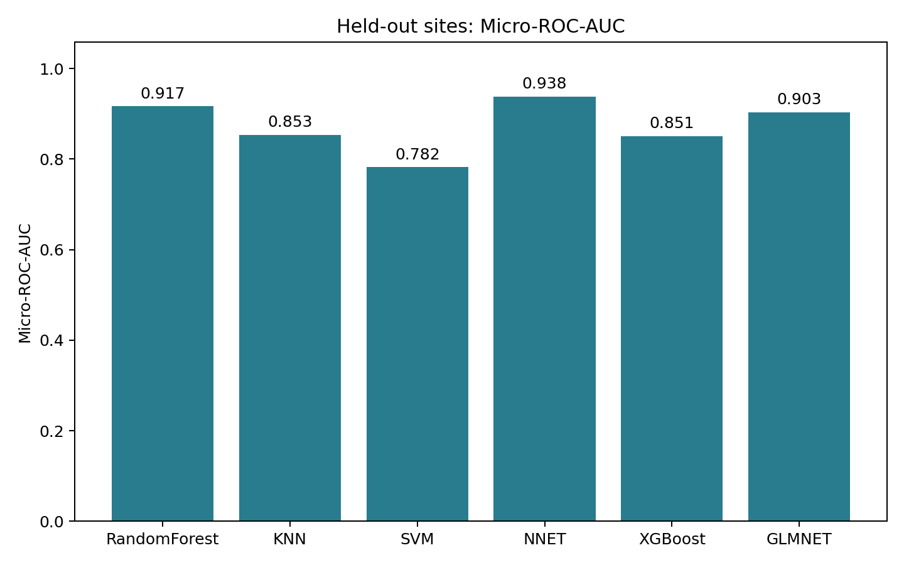

129 microbiome predictors · 138 matched samples · Five labels evaluated together
CV-selected model: RandomForest. Test rankings are descriptive and do not change that selection.
| Model | Multilabel MCC | Micro-AUPR | Micro-ROC-AUC |
|---|---|---|---|
| RandomForest | 0.4528 | 0.6193 | 0.9167 |
| KNN | 0.3924 | 0.3736 | 0.8534 |
| SVM | 0.3471 | 0.4290 | 0.7821 |
| NNET | 0.5191 | 0.5049 | 0.9382 |
| XGBoost | 0.3645 | 0.5658 | 0.8508 |
| GLMNET | 0.4505 | 0.3685 | 0.9033 |
Test metric leaders: {'Multilabel MCC': 'NNET', 'Micro-AUPR': 'RandomForest', 'Micro-ROC-AUC': 'NNET'}.
The test has 29 samples from seven groups. This dataset and holdout were used in previous analyses; this run isolates test data from fitting and selection. Rare positives and tuning optimism limit conclusions.



Complete report and taxa lists · Test results · CV results · Feature matrix · Selected taxa and sample counts · Site and fold assignments
Multilabel MCC is binary MCC across flattened sample-label pairs. Micro-AUPR is trapezoidal PR area; Micro-ROC-AUC uses flattened probabilities. No metadata predictors or additional feature selection are used.